The control roof is detected on 7/7 dates instead of 0/7. The new projection accounts for Gaussian shape and opacity. The model and confidence threshold are unchanged.
This experiment improves structure recognition in 3DGS. Strict statuses refer to the previous semantic registration: its transforms and geometric supports are preserved. Improved recognition alone does not prove better alignment.
Method and limitations · Comparison CSV · Point counts · Previous registration comparison
| Date | Roof points | Detected: before → after | False buildings in vegetation | Strict check of previous pose |
|---|---|---|---|---|
| 0331 | 666 | 0.0% → 86.2% | 0.0% | Passed |
| 0504 | 1269 | 0.0% → 99.7% | 0.0% | Passed |
| 0609 | 1143 | 0.0% → 99.0% | 0.0% | Passed |
| 0708 | 888 | 0.0% → 59.8% | 0.0% | Failed |
| 0723 | 1319 | 0.0% → 91.9% | 0.0% | Failed |
| 0831 | 317 | 0.0% → 85.5% | 0.0% | Passed |
| 0929 | 284 | 0.0% → 80.6% | 0.0% | Passed |
Fractions refer to one roof and one vegetation strip. Settings were developed on this site; this is not an independent whole-scene evaluation.
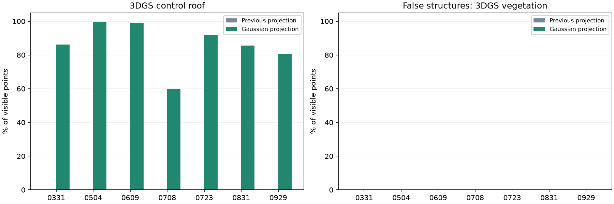
0708: three pairs meet the overlap gates, but their centers are almost collinear. The second singular value of centered source coordinates is 1.962274 m against a 2 m minimum; LAS gives 4.353667 m. Minimum spacing is about 59 m, so the issue is transverse spread. The 3.77 cm gap is in this support metric, not object-position error. The threshold is unchanged.
0723: only two pairs meet ≥80% forward and ≥50% reverse overlap within 1 m. The third spaced pair p8_c16 → p8_c39 gives 71.15% / 55.38%: 37 of 52 source points are within 1 m of the assigned fragment, while at least 42 are needed. Five confirmed points are missing; this does not justify adding artificial points.
All triples were checked; none qualifies. Thresholds are unchanged. Previous-method primary acceptance remains 7/7 and strict acceptance 5/7.
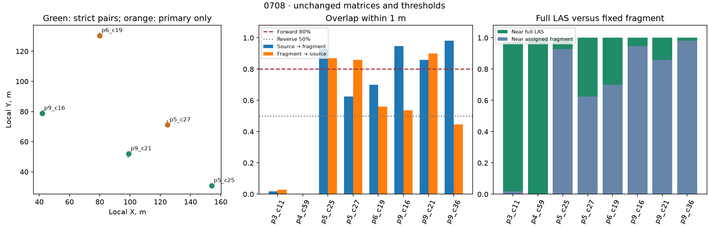
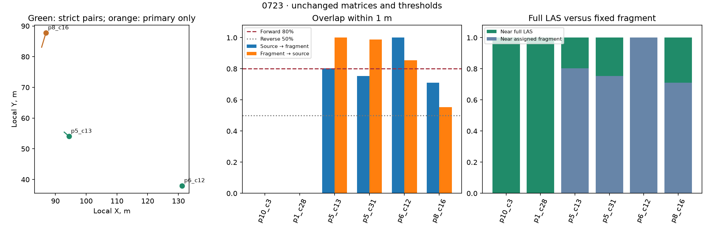
Top: full scene. Bottom: control roof. Orange points show final structure labels.
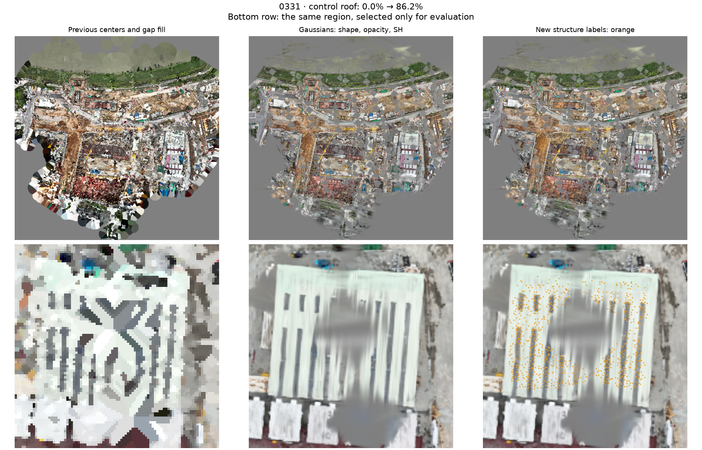
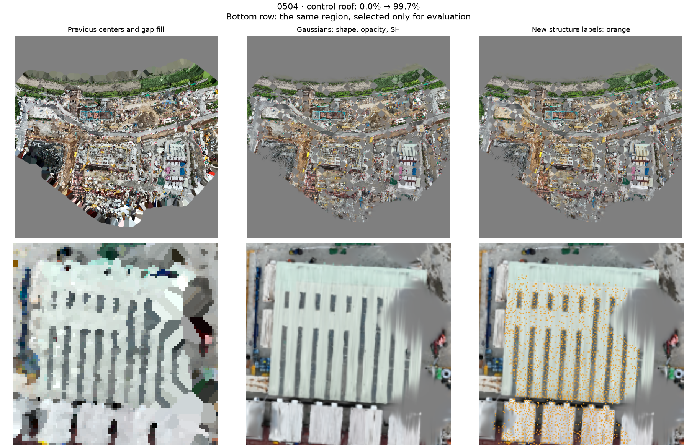
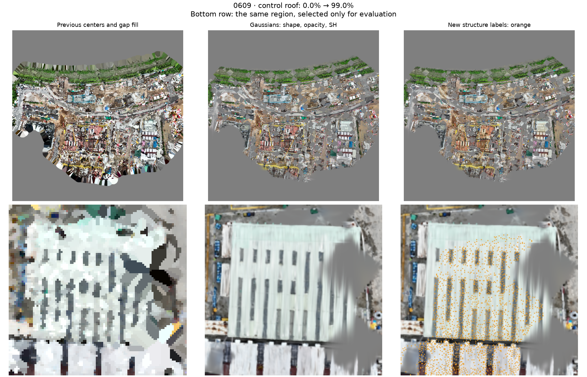
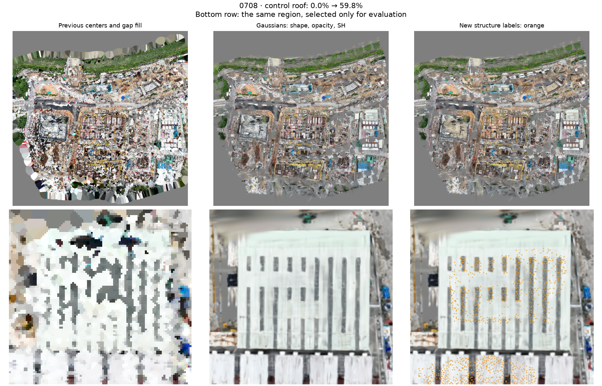
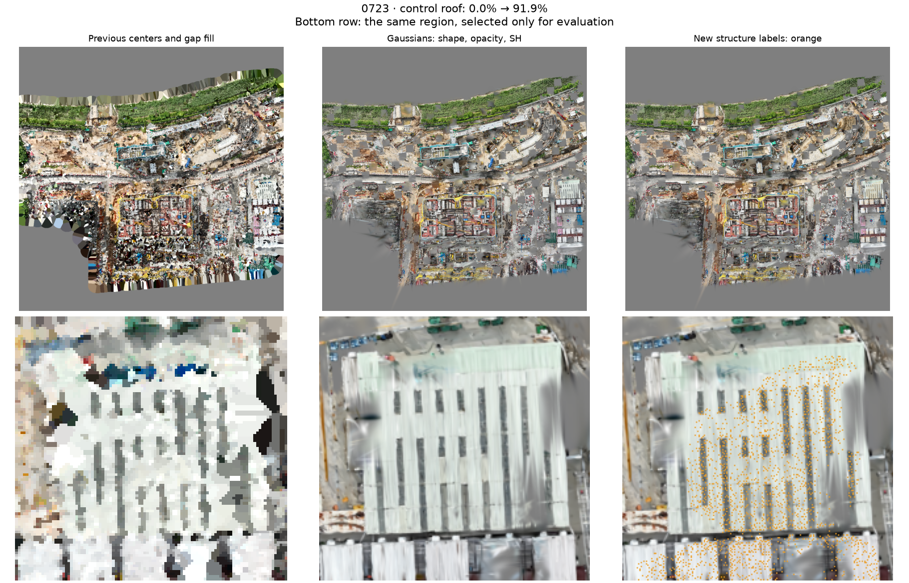
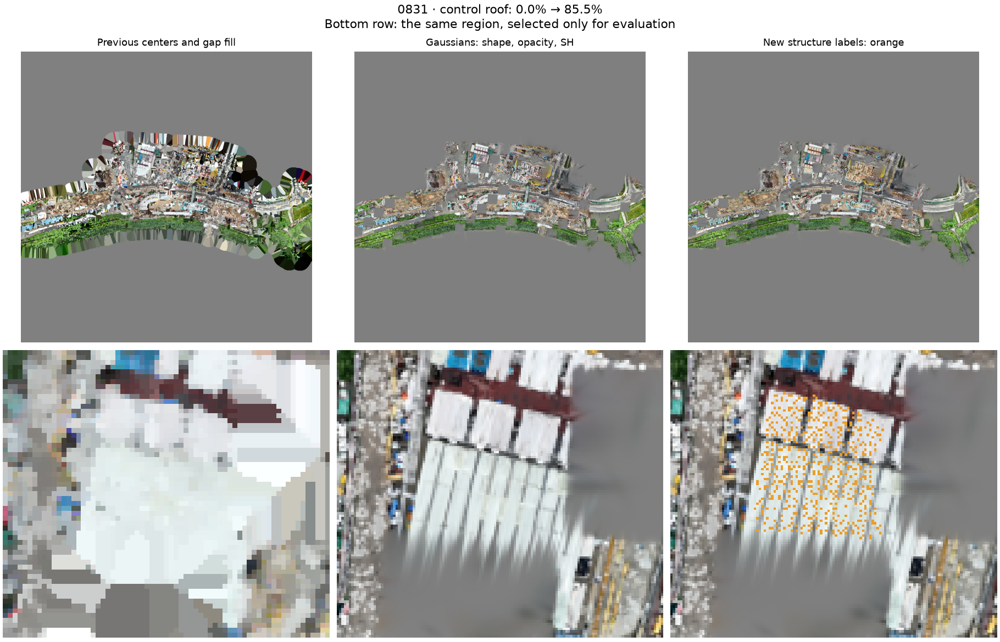
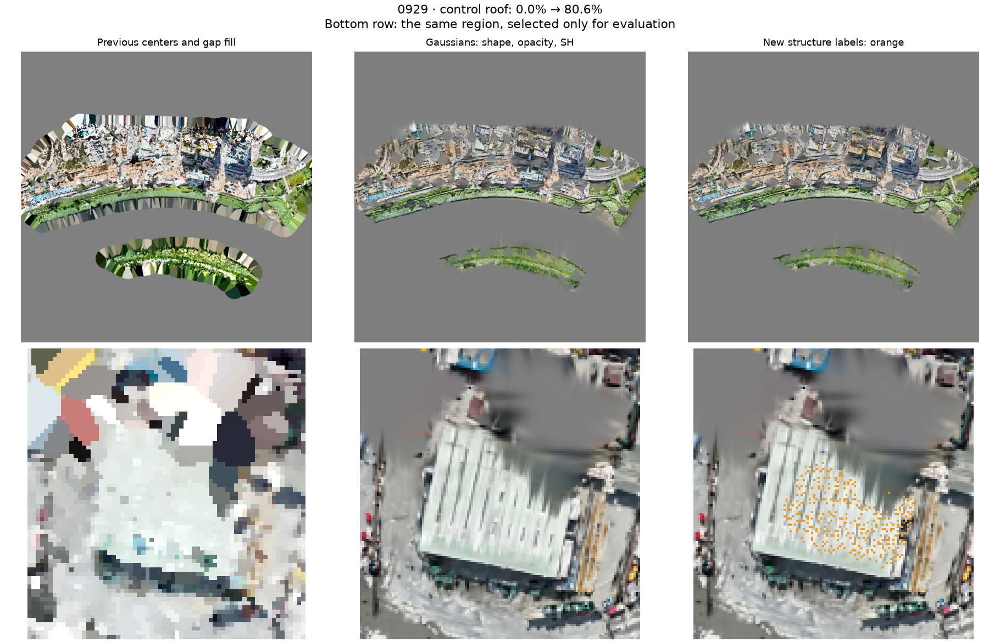
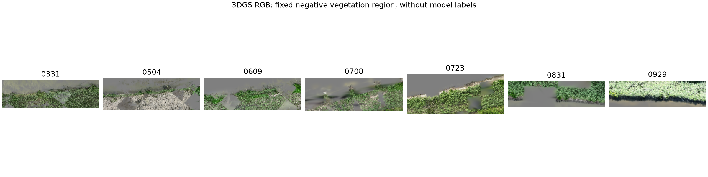